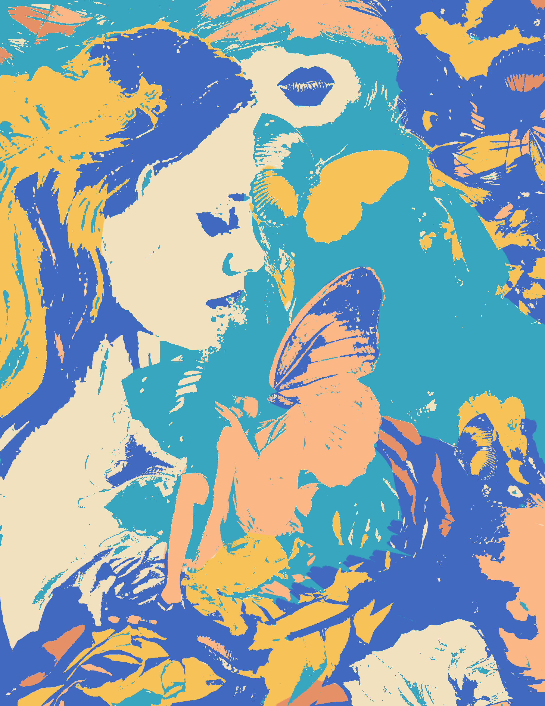

Welcome!
Hi there! I am Zoe Rasico, a 20 year old student at MSU studying under the Games and Interactive Media design sector at the College of communications and Arts. Welcome to my blog!
An important thing to know about me is I have a huge passion for the arts! From painting traditionally and digitally, to crafts, graphic design, comics, and so much more, I cannot get enough of creative mediums! One of my favorite subjects to practice and learn about is color theory! Colors may seem pretty basic, but are a lot more complicated than one may think. Color theory is a breakdown of how different colors pair and interact with one another, evaluating aspects such as saturation, value, hue, temperatures, undertones, compliments, and many more! Understanding color theory helps guide artists to choose color combinations to effectively convey emotion and concepts they are trying to get across to the viewer. To me, colors can really change the meaning of an artwork, and engross the viewer in the world the artist tried to create. Art is a safe place to explore and learn, and experimenting with color is what truly got me into art in the first place. Who knows, you might be able to end up with something beautiful!
Interested in hearing the musings and ramblings of a young artist? Then you have found the perfect place to be, and I'm glad to have you! Have a lovely day!
